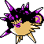

#378
Overqwil
DarkPoison
Abilities: Poison Point, Swift Swim, Intimidate
Base stats BST 510
HP85
Attack115
Defense95
Speed85
Sp. Atk65
Sp. Def65
Evolution
None detected.
Level-up learnset
LevelMoveType
Lv. 1Poison StingPoison
Lv. 1RolloutRock
Lv. 1LiquidationWater
Lv. 1TackleNormal
Lv. 4HardenNormal
Lv. 5SpikesGround
Lv. 8BiteDark
Lv. 9Pin MissileBug
Lv. 16MinimizeNormal
Lv. 19Toxic SpikesPoison
Lv. 26Night SlashDark
Lv. 34Poison JabPoison
Lv. 38Aqua TailWater
Lv. 42Destiny BondGhost
Lv. 44ToxicPoison
Lv. 48CrunchDark
Lv. 49Double-EdgeNormal
Lv. 54Gunk ShotPoison
Lv. 60ExplosionNormal